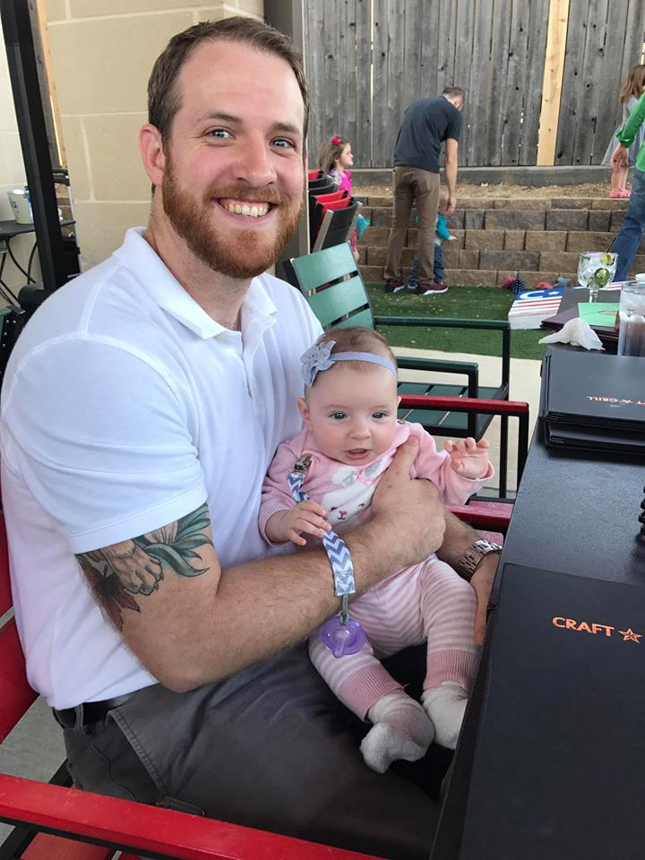

About Me
Hi my name is William Cotton and I am currently enrolled in a coding bootcamp hosted by the University of Texas at Austin via Triliogy. I am thoroughly emjoying the challenge that coding offers as well as the creativity. I decide to presue computer coding because I wanted a change in careers. Coding stood out to me because I have many friends in different aspects of the business that really enjoy thier work, as well as, being somewhat computer savy I knew it would be a good fit. I hope, in time, that I will make this a full time career doing front-end wed development.
 A little background about myself, I graduated from the University of Texas at Austin with a bachelors degree in geography in December 2012. I am a husband to a wonderful wife and a recent father to a beautiful and healthy baby girl. I currently work at a land surverying company and am really enjoying the work. I love my family and the outdoors and am a huge fan of The Lord of the Rings triology.